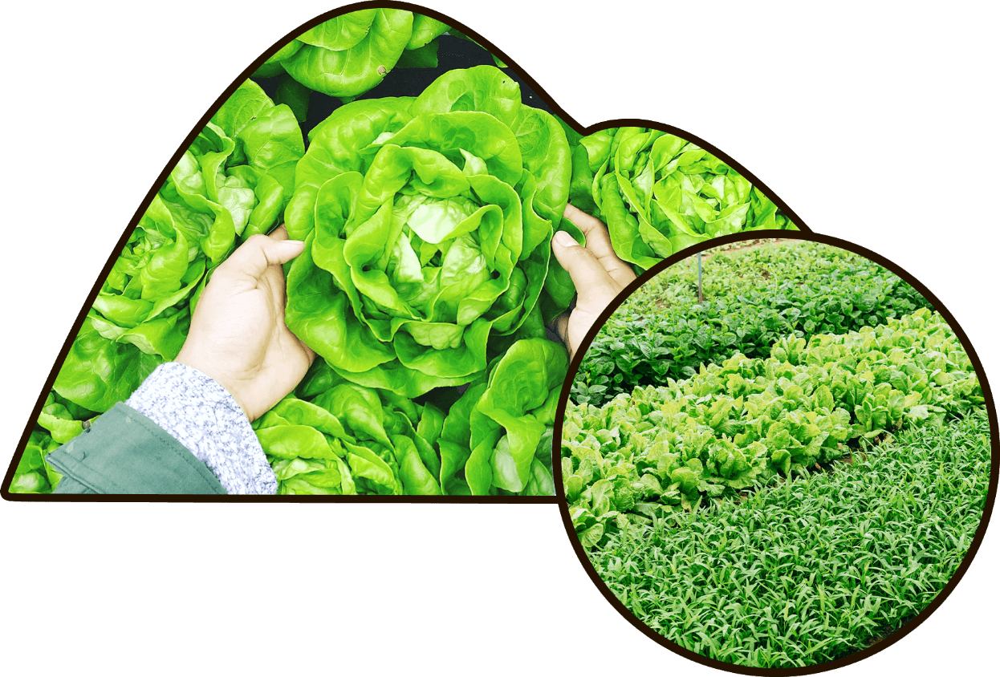

栽培環境のこだわり
青空ファームで栽培される野菜たちは年間平均気温8℃前後の冷涼な高原地帯で栽培され「みずみずしさ」と「おいしさ」にあふれています。太陽に近く、大自然に囲まれた最高の環境で成長することで、新鮮な野菜を収穫できるのです。
青空ファームで栽培される野菜たちは年間平均気温8℃前後の冷涼な高原地帯で栽培され「みずみずしさ」と「おいしさ」にあふれています。太陽に近く、大自然に囲まれた最高の環境で成長することで、新鮮な野菜を収穫できるのです。
青空ファームでは、自然農法を採用しております。自然農法とは、農薬や化学肥料を一切使用せずに栽培する農法です。手間はかかりますが、自然農法で収穫された野菜は栄養分の多い皮も一緒に食べることができます。
赤玉土、バーミキュライト、鹿沼土、黒土、その他10種類を独自に配合し開発した、青空ファーム限定の土でございます。
青空ファーム直売所
気温にデリケートな野菜で、１５℃から２０℃で最も良く生育します。
※50g~の販売となります。
種まきから約3ヶ月後に収穫ができるため、比較的育てやすいです。
※70g~の販売となります。
15℃から25℃で発芽するため、2月下旬から3月中旬に種まきをします。
※50g~の販売となります。
夏の収穫を考え、4月から5月に種まきをします。約90日で収穫可能です。
※80g~の販売となります。
栽培適温を維持するため種まきは秋に行うことをおすすめします。
※80g~の販売となります。
3月頃に種まき、5月頃に定植し、7月頃に収穫するのが一般的です。
※80g~の販売となります。
青空ファーム直売所
FARM 銀座店
※商品の購入は直売所その他販売店をご利用ください。
受付時間: 月曜日~土曜日の9時~17時まで